TL;DR
Bonsai-Image-4B is a 4-billion-parameter image generator quantized to 1.58 bits per weight (ternary −1/0/+1) and step-distilled to 4 steps. The whole ternary build is ~4.3 GB on disk and sits in ~5 GB of VRAM — small enough to live comfortably on a consumer 24 GB card with room to spare.
On my RTX 4090 it loads in ~16 s (imports + weights + prewarm), then renders a warm 512–768² image in ~0.5–1 s at 4 steps. The first image at any new resolution pays a one-time Triton JIT + gemlite autotune (a few seconds), so the right way to use it is in batches: load once, render many.
It is text-to-image only — this build strips out img2img / editing. Quality is strong on
photographic and illustrative looks, it renders short text cleanly (a logo word), and a single
--style flag pushes it convincingly into comic, vector, sketch, caricature and other styles.
What Bonsai-Image-4B is, in one paragraph
Bonsai-Image-4B (PrismML) is a 4-billion-parameter FLUX.2-family rectified-flow
text-to-image transformer that has been pushed through extreme post-training quantization: its
weights are ternary — each one is just −1, 0 or +1, i.e. 1.58 bits — with
a lighter 1-bit binary sibling also released. Inference runs on gemlite + HQQ low-bit Triton kernels on CUDA (and on mflux/MLX on Apple Silicon). On top of
the quantization, the sampler is distilled to four steps, so a render is four transformer passes,
not the usual 20–50.
The point of all this is size without a quality cliff. The recommended ternary build is the sweet spot — about 4.3 GB on disk, broken down as a ~1.5 GB int2-packed transformer, a ~2.8 GB HQQ-4bit text encoder and a ~0.17 GB VAE. That is exactly the kind of model that should run on one consumer GPU, so I pointed it at my RTX 4090 and used it from a small batch wrapper. The rest of this article is what came out.
/d/hugging_face_cache) — not the system drive; a uv venv on Python 3.11 with
torch/cu13, gemlite and HQQ. The pipeline is the demo repo's backend_gpu.GpuPipeline,
driven in-process so the model loads once and a whole batch reuses it.
Running it on a 4090 — load once, render many
The expensive part of a low-bit render is not the diffusion — it's the cold start. Imports, the ~4 GB weight load,
and the first-time Triton JIT + gemlite autotune for a given output shape dominate; the four-step forward pass
itself is sub-second. gemlite even auto-selects a tuning profile for the card (4090.json here). So the
whole pipeline is built to be loaded once and reused across a batch.
| What I measured (RTX 4090, ternary) | Number |
|---|---|
| Model load — imports + weights + prewarm | ~16 s (once per batch) |
| Warm render, 512–768², 4 steps | ~0.5–1 s / image |
| First render at a new resolution (JIT + autotune) | ~2–11 s (one-off) |
| Resident VRAM | ~4.7–5.2 GB |
| 8-image aspect set in one model load | ~46 s total |
| 10-image style set (shapes pre-warmed) | ~26 s total |
To make that batch behaviour easy I wrapped the pipeline in a thin CLI — a single-image runner and a batch runner that takes a JSONL of jobs and keeps the model resident for the whole list. Every job can set its own prompt, aspect ratio, size, seed and style. The galleries below were each produced by one such batch:
# one model load, the whole gallery (each line = one job)
bonsai_batch.sh --jsonl jobs.jsonl --name demo # the aspect-ratio set
bonsai_batch.sh --jsonl styles.jsonl --name style # the style-preset set
# a single image — outputs land in the current directory
bonsai_run.sh -p "an icy bonsai in a snowy forest" --aspect 3:2 --size 768 --seed 9909
Output dimensions are snapped to multiples of 32 (a requirement of the gemlite diffusion path),
with --size as the long edge and --aspect W:H setting the ratio.
One model, seven aspect ratios
All eight images below came out of a single batch (one model load). The caption on each is its exact configuration — ratio, resolved pixel size and seed — followed by the prompt. Same prompt + same seed + same size is fully reproducible.
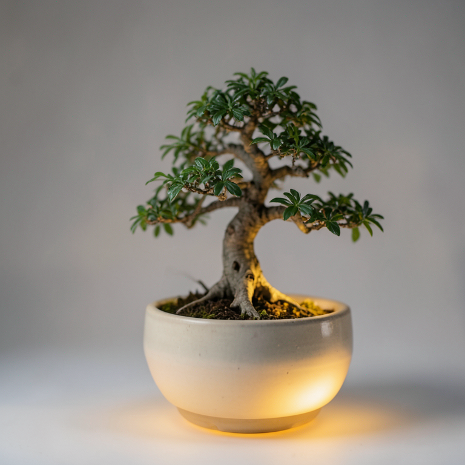

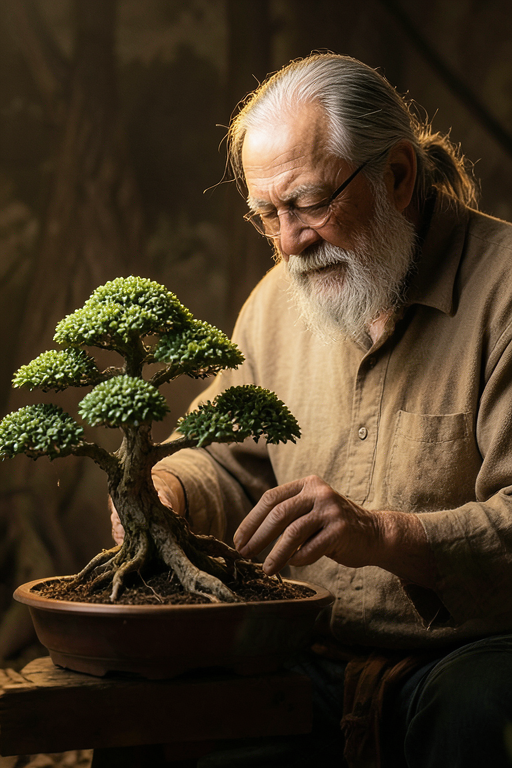
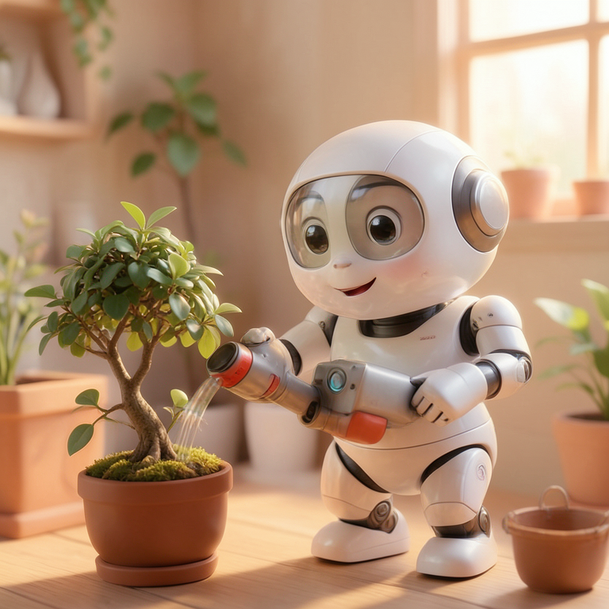
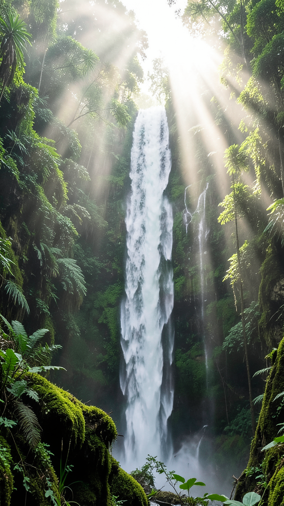
Ten style presets from one flag
Bonsai is a single general model — there are no style LoRAs here. Each look below is a prompt fragment
appended by a --style flag (e.g. --style comic adds "comic book art, bold ink outlines,
halftone shading…"). Ten presets, one batch, one model load. Captions show the style flag, ratio and seed.
# global style for a whole batch, or per-job "style" in the JSONL
bonsai_run.sh -p "a superhero bonsai flying over a city" --style comic --aspect 3:2
# styles: comic · illustration · cartoon · vector · minimalist-vector ·
# sketch · stickman · infographic · typography · caricature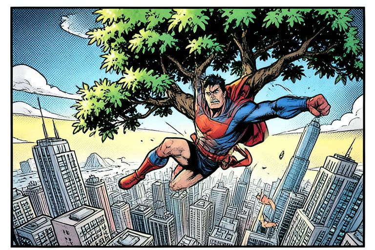
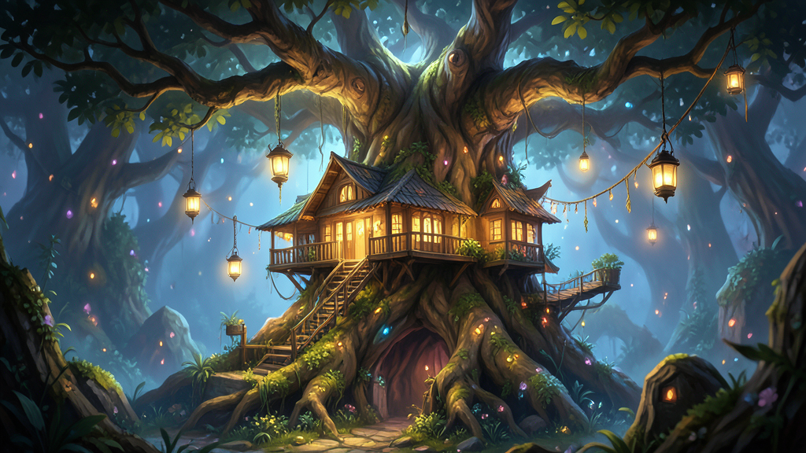
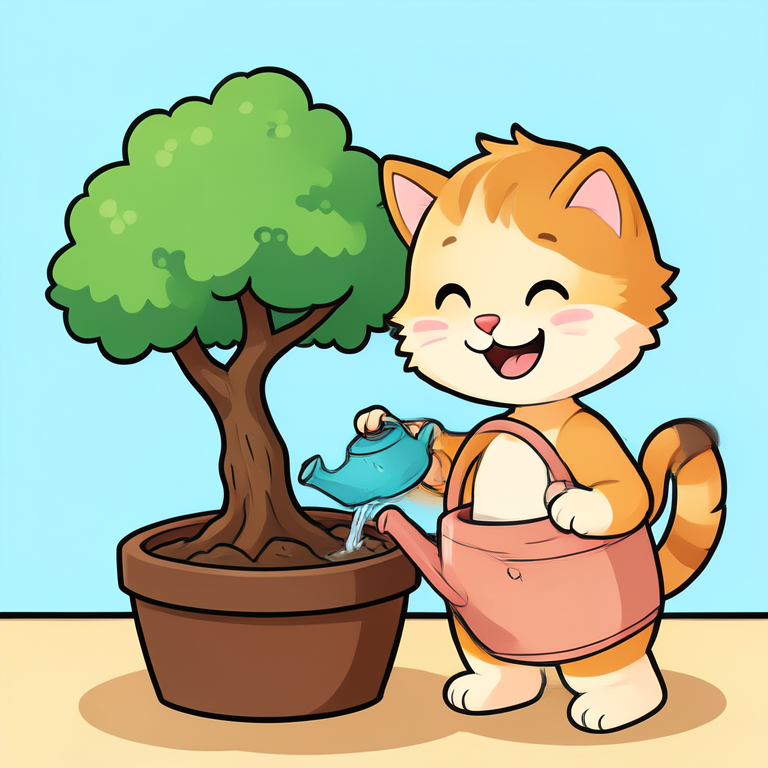
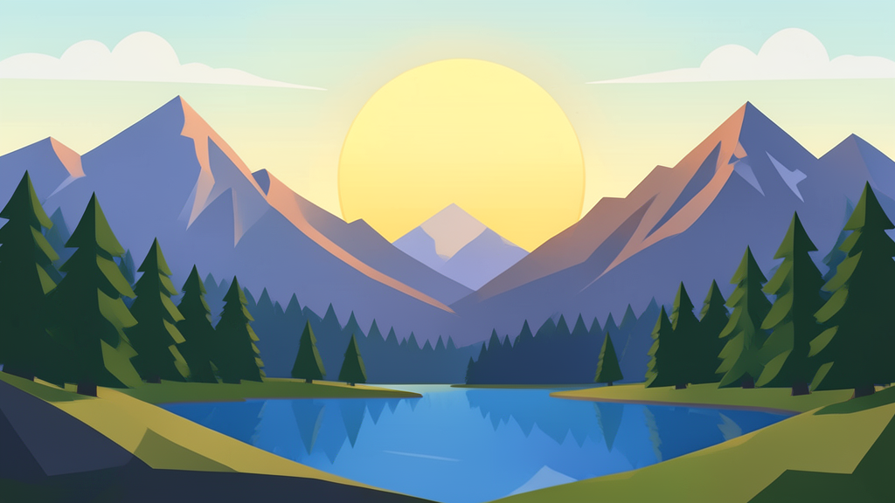
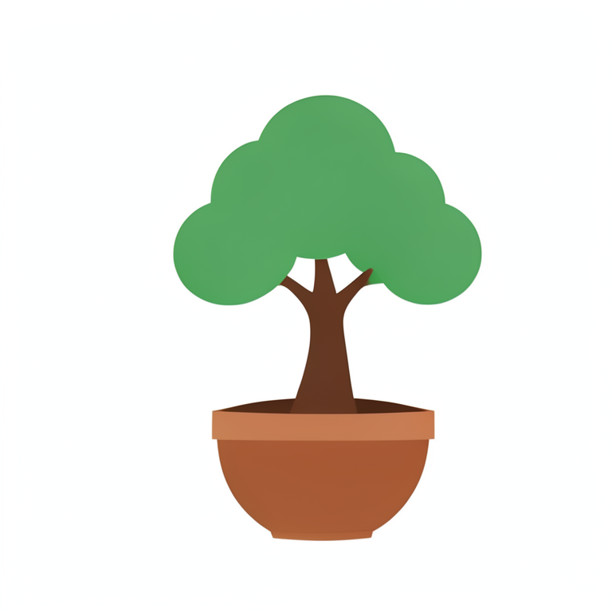
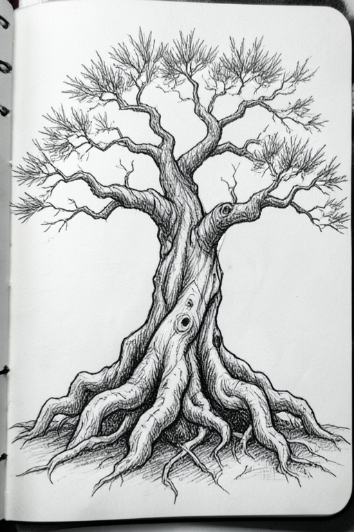
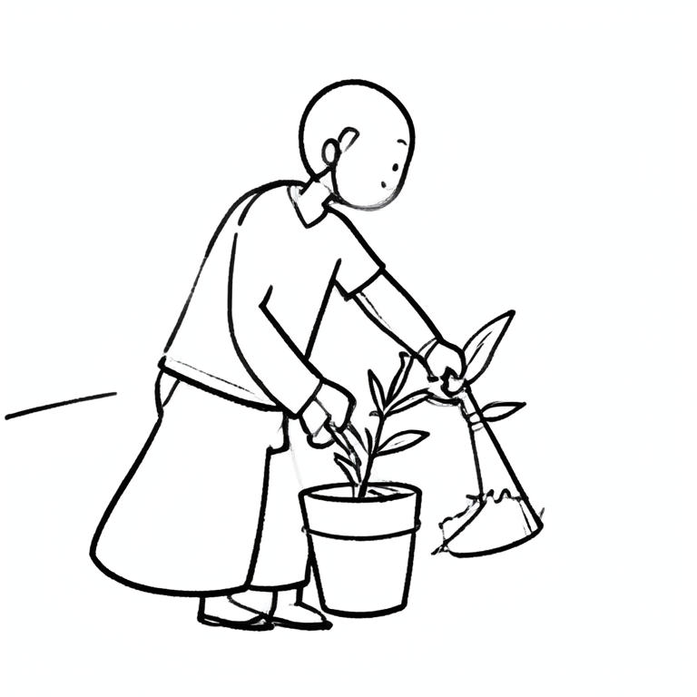
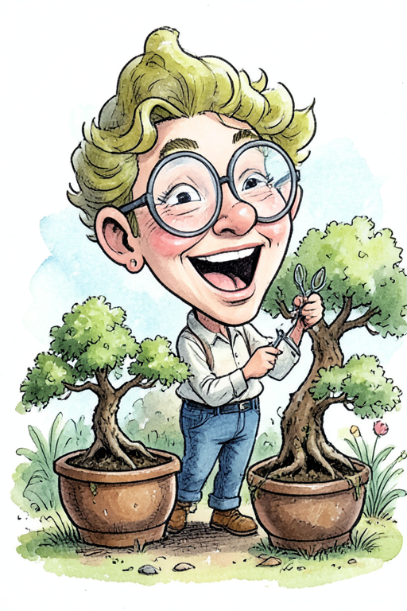
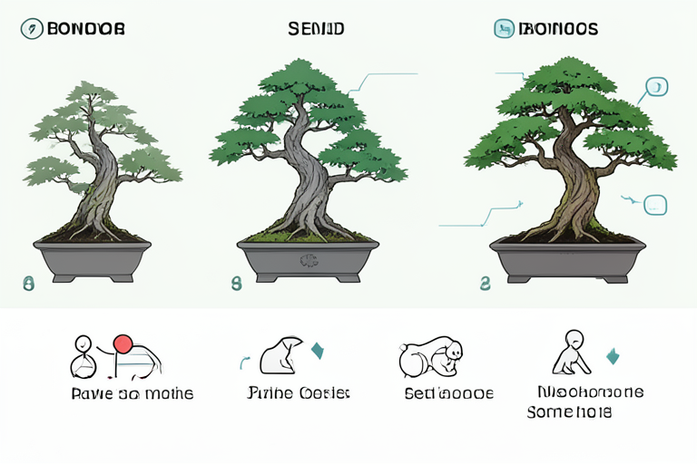
On text and infographics
Short text comes out clean — the "BONSAI" word-art above is rendered correctly. Long label text does not: the infographic reads structurally as a numbered stages diagram, but its small labels are gibberish. That's a known limit of the base image model, not the styling — for crisp labelled diagrams a design-trained model is the better tool.
Strengths, and the one limit
For a model this compressed, the photographic and illustrative output holds up remarkably well at 4 steps — the icy-bonsai and golden-hour-valley shots above would be hard to pick out as "1.58-bit". Style coverage is broad from a single flag, and reproducibility (seed + size) is exact.
The practical workflow, then: pick your aspect ratio and style, fire a batch so the ~16 s load is paid once, and reroll the seed when a tall composition or a fine detail isn't quite right. On a 24 GB 4090 with ~5 GB resident and sub-second warm renders, it is a genuinely fast local text-to-image option.
References
- PrismML — the team behind Bonsai-Image.
- Hugging Face —
prism-ml/bonsai-image— the ternary & binary weights (mlx + gemlite builds). - GitHub —
PrismML-Eng/Bonsai-Image-Demo— the demo: setup, model download and the FastAPI + Next.js studio. - Low-bit kernels: gemlite and HQQ (CUDA); mflux + MLX on Apple Silicon.
Reading the configs
Each card is one line of the batch's
jobs.jsonl, e.g.{"prompt": "...", "aspect": "16:9", "size": 1024, "seed": 42}. Wide ratios (16:9, 2:1) keep composition together well; very tall ratios (9:16, 1:2) are where a 4-step model is most likely to want a seed reroll.